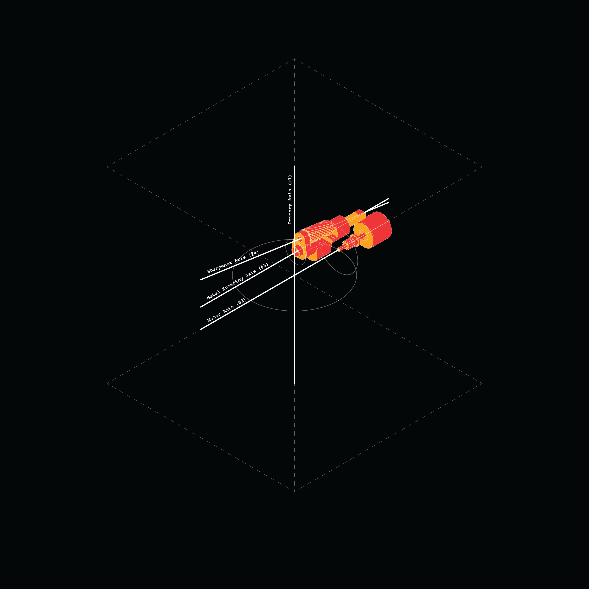
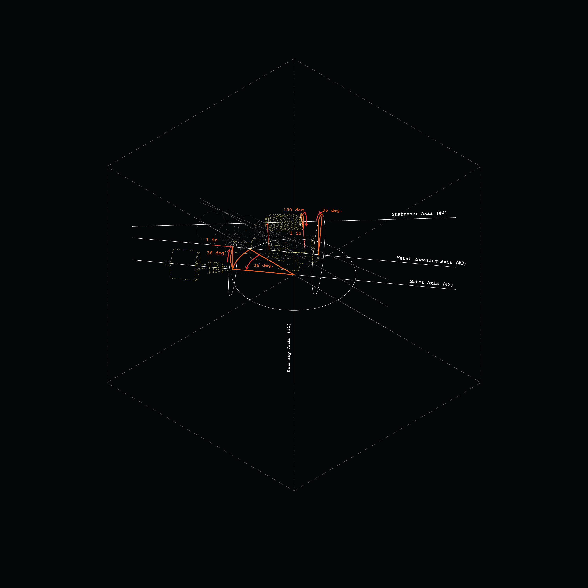
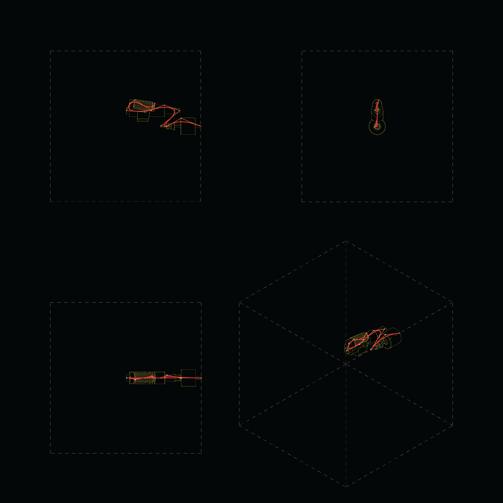
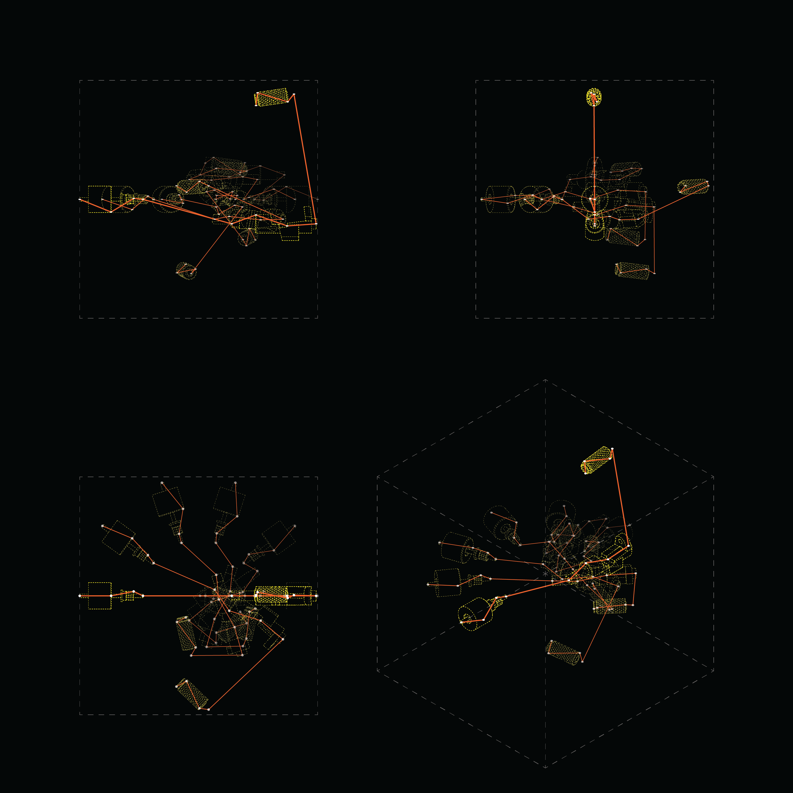

Geometric Reasoning
Spring 2026Using the motion of a series of objects as a machine to create a new drawing

The Drawing Machine
The machine is created from the three objects that represented the 'soul' of the pencil sharpener from the "Objects of Arresting Novelty" project: the motor, the metal encasing, and the sharpener screw. A series of transformations allow the objects to create a drawing as they shift and rotate together. All objects first rotate around the bounding box's centroid axis. Next, all are rotated around the axis of the motor, then around the sharpener's encasing, and finally the sharpener spiral rotates about its own axis. Meanwhile, the elements slowly separate from each other, emulating an exploded axon diagram.
By constructing a curve through key points attached to the objects, new curves emerge as the transformations occur. The final drawing (right) was created by dividing the series of curves into many points, shifting the indices of each point incrementally, and connecting the corresponding indices to create the diagonal sweeping motion seen in the final model.




